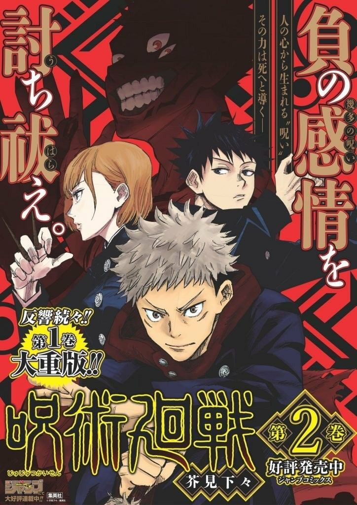
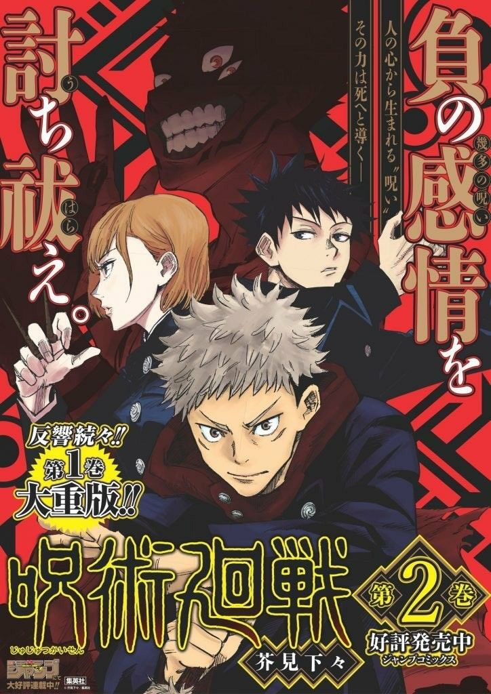
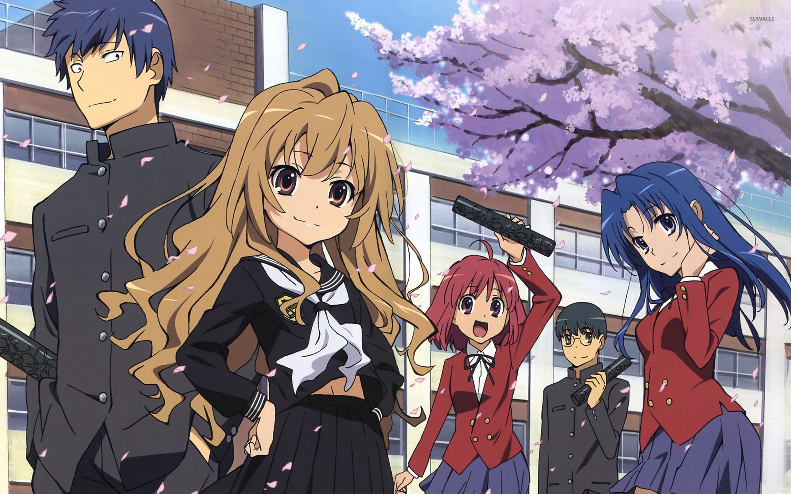
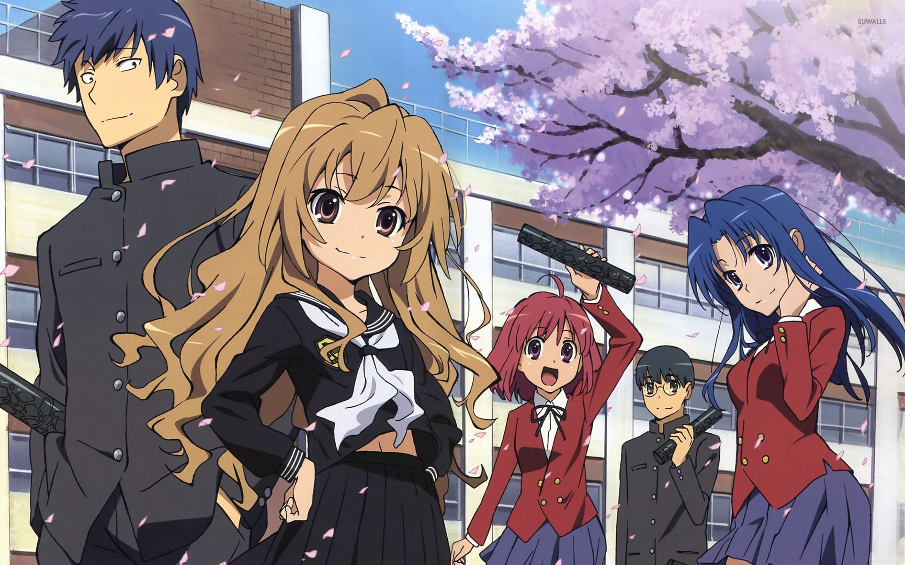

Villanos terroríficamente malvados de los rincones más oscuros del espacio y el tiempo se enfrentan con la Tierra, y Goku, el guerrero más fuerte del planeta, es todo lo que se interpone entre la humanidad y la extinción. Acompañado en la batalla por los valientes Guerreros Z, Goku viaja a reinos lejanos y peligrosos en busca de los poderes mágicos de las siete Dragon Balls... ¡y de una buena pelea!


 


 
